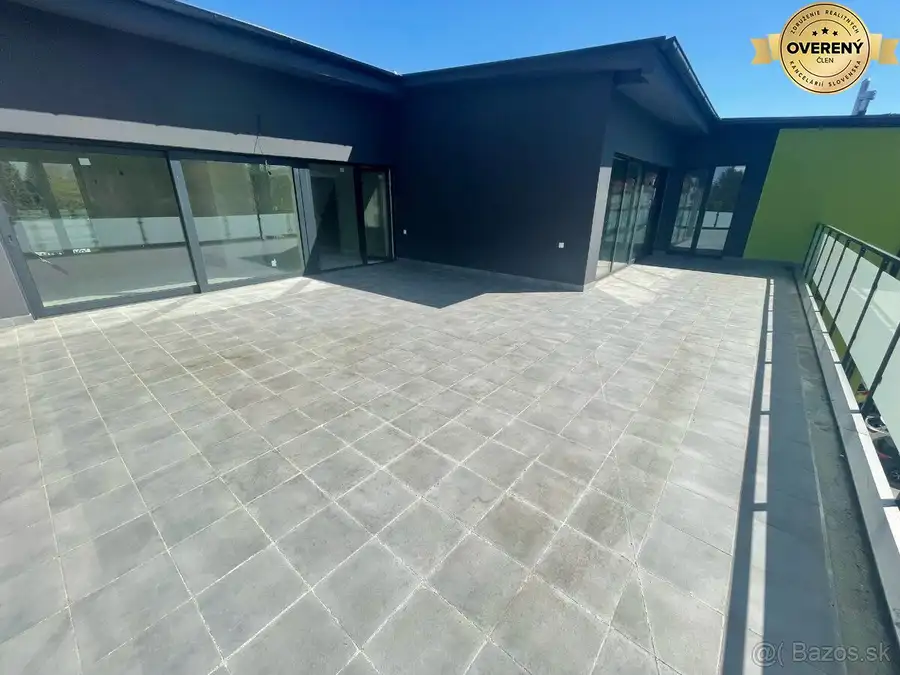
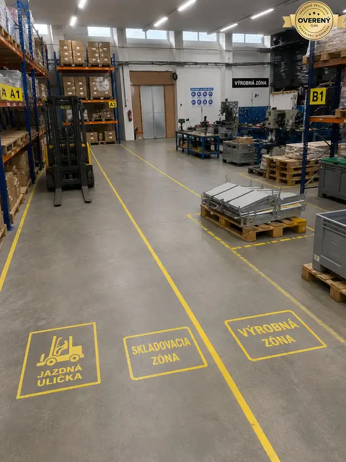

Predaj rodinného domu, Spišská Teplica
Spišská Teplica
- Dispozícia5-izbový
- Plocha180 m²
- Poschodie0. z 2
- Stavčiastočne prerobený
- Vlastníctvoosobné
O nehnuteľnosti
Dobré Reality ponúkajú na predaj so súhlasom majiteľa rodinný dom nachádzajúci sa v obľúbenej obci Spišská Teplica, ktorá poskytuje príjemné bývanie s kompletnou občianskou vybavenosťou a výbornou dostupnosťou.
Rodinný dom je situovaný na pozemku so záhradou o výmere 501 m². Zastavaná plocha rodinného domu je 111 m².
Súčasťou nehnuteľnosti je aj hospodárska budova o výmere 49 m², ktorú tvorí garáž a skladovací priestor.
DISPOZÍCIA DOMU
Rodinný dom pozostáva z dvoch nadzemných podlaží, podzemného podlažia a neobytného podkrovia.
1. nadzemné podlažie – denná časť domu:
kuchyňa,
jedáleň,
obývacia izba,
špajza,
kúpeľňa.
Jednotlivé miestnosti dennej časti sú vzájomne prepojené, pričom kuchyňa, jedáleň a obývacia izba vytvárajú príjemný spoločenský priestor. Miestnosti sú prepojené aj veľkými dvojkrídlovými dverami, ktoré dodávajú interiéru vzdušnosť a príjemnú atmosféru.
Do budúcnosti je možné z kuchyne vytvoriť priamy výstup na terasu a prepojiť tak interiér so záhradou.
2. nadzemné podlažie – nočná časť domu:
tri samostatné izby,
možnosť výstupu na krytú terasu.
Toto podlažie poskytuje dostatok priestoru na vytvorenie komfortnej nočnej časti pre rodinu.
Podzemné podlažie:
Nachádza sa tu najmä technická časť domu a ďalšie priestory poskytujúce možnosti na skladovanie.
Podkrovie:
Dom disponuje aj neobytným podkrovím, ktoré môže slúžiť ako ďalší úložný priestor.
LOKALITA
Veľkou výhodou tejto nehnuteľnosti je jej umiestnenie v lokalite s veľmi dobrou občianskou vybavenosťou.
V blízkosti rodinného domu sa nachádza:
škola,materská škola,obchod,kostol a autobusová zastávka vzdialená len niekoľko metrov od domu.
Rodinný dom predstavuje ideálnu príležitosť pre záujemcov, ktorí hľadajú bývanie v obľúbenej lokalite Spišskej Teplice s dostatkom priestoru, záhradou a možnosťou prispôsobiť si nehnuteľnosť podľa vlastných predstáv.
Pre viac informácií alebo dohodnutie obhliadky nás neváhajte kontaktovať.
Spišská Teplica ponúka pokojné rodinné bývanie v príjemnom prostredí s výbornou dostupnosťou do mesta Poprad.
DOBRÉ REALITY – Sme spoľahlivá realitná spoločnosť a líder v oblasti realitných služieb.
Viac ako 15 rokov nám dôverujú tisícky klientov po celom Slovensku.
Pomôžeme Vám najvýhodnejšie predať, kúpiť alebo prenajať nehnuteľnosť.
Našim klientom garantujeme:
- osobný prístup a spoľahlivé služby,
- profesionálne spracovanie inzercie,
- bezpečný priebeh celého procesu.
Vaša nehnuteľnosť bude široko inzerovaná na najdôležitejších inzertných portáloch, vrátane
platených. U nás máte istotu prvotriedneho servisu a služieb po celom Slovensku.
Najspokojnejší REALITNÍ MAKLÉRI sú súčasťou úspešného tímu DOBRÉ REALITY. Ak chcete
spokojne a bez stresu pracovať v oblasti nehnuteľností v príjemnom firemnom prostredí, určite
spolupracujte s nami. O výhodách spolupráce s nami sa už presvedčili mnohí začínajúci aj skúsení
realitní makléri.
DOBRÉ REALITY sú členom Združenia realitných kancelárií Slovenska (ZRKS) a Realitnej únie SR.
Parametre
| Rozloha pozemku | 501 m² |
|---|---|
| Zastavaná plocha | 111 m² |
| Celková rozloha | 661 m² |
| Úžitková plocha | 180 m² |
| Poschodie | prízemie |
| Počet poschodí | 2 |
| Počet izieb | 5 |
| Vlastníctvo | osobné |
| Stav | čiastočne prerobený |
| Odvoz odpadu | áno |
| Voda | verejný vodovod |
| El. napätie | 230/400V |
| Plyn | áno |
| Kanalizácia | áno |
| Internet | telefónna linka |
| Kúpeľňa | áno |
| Vykurovanie | vlastné - plyn |
| Balkón | nie |
| Lódžia | nie |
| Terasa | áno |
| Pivnica | áno |
| Garáž | áno |
| Parkovanie | áno |
| Inžinierske siete | áno |
| Postavené z | iné |
| Zariadenie | nezariadený |
| Zateplený objekt | nie |
| Strecha | pôvodná |
| Krb | nie |
| Klimatizácia | nie |
| Energetický certifikát | nie |
| Predzáhradka | áno |
| Bezbariérový prístup | nie |
| Okná | drevené |
| Terén | mierny svah |
| Prístupová cesta | asfaltová cesta |
| Dátum zverejnenia | 2. 9. 2026 |
Kde to je
Mohlo by Vás zaujímať

Byt6 300 000 €EXKLUZÍVNE | Nadštandardný 3-izbový byt s veľkorysou terasou Svit 3-izbový100 m²3. podlažie Byt zaujme svojou priestrannosťou, modernou dispozíciou a výnimočnou terasou, ktorá vytvára jedinečnú atmosféru bývania. Denná časť orientovaná na…
Nebytové priestory 3 000 €Prenájom výrobného priestoru, Partizánska ul., Poprad Poprad 500 m² Priestory sú vhodné na výrobu, skladovanie, logistiku alebo kombinované podnikateľské využitie. Súčasťou objektu je kompletné zázemie pre… Nebytové priestory
1 500 €Prenájom skladu, Partizánska ul., Poprad
Poprad
250 m²
Priestory sú vhodné na výrobu, skladovanie, logistiku alebo kombinované podnikateľské využitie. Súčasťou objektu je kompletné zázemie pre…
Nebytové priestory
1 500 €Prenájom skladu, Partizánska ul., Poprad
Poprad
250 m²
Priestory sú vhodné na výrobu, skladovanie, logistiku alebo kombinované podnikateľské využitie. Súčasťou objektu je kompletné zázemie pre…